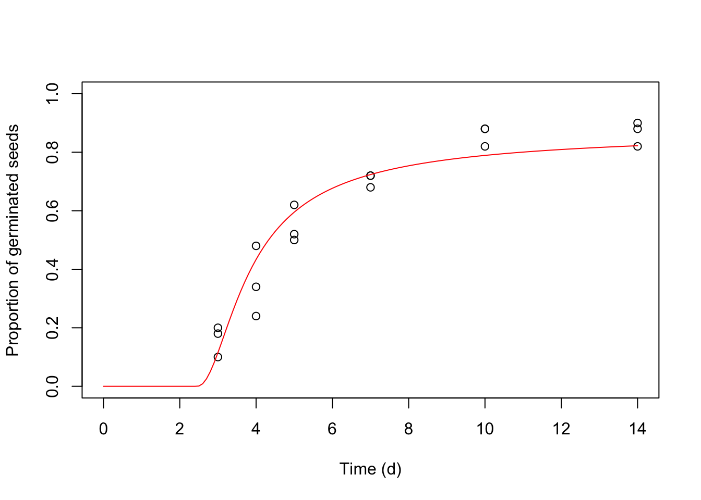

The germination of rapeseed (Brassica napus L. var. oleifera, cv. Excalibur and Toccata) was tested at thirteen different water potentials (-0.03, -0.15, -0.3, -0.4, -0.5, -0.6, -0.7, -0.8, -0.9, -1, -1.1, -1.2, -1.5 MPa), which were created by using a polyethylene glycol solution (PEG 6000). For each water potential level, three replicated Petri dishes with 50 seeds were incubated at 20°C. Germinated seeds were counted and removed every 2-3 days for 14 days.
The dataset is already sorted out for time-to-event analysis and it is available in the ‘drcSeedGermPackage’ as ‘rape2G’. In order to use this dataset for nonlinear regression analyses, we need to remove all rows where ‘timeAf = Inf’.
library(drc)
library(drcSeedGerm)
data(rape2G)
head(rape2G)## CV Psi Dish timeBef timeAf nSeeds nCum Prop
## 295 Excalibur 0 43 0 3 49 49 0.98
## 296 Excalibur 0 43 3 4 0 49 0.98
## 297 Excalibur 0 43 4 5 0 49 0.98
## 298 Excalibur 0 43 5 7 0 49 0.98
## 299 Excalibur 0 43 7 10 0 49 0.98
## 300 Excalibur 0 43 10 14 0 49 0.98We can now fit all nonlinear HT models, considering all the possible distributions of base water potential. We would like to highlight that starting values are not necessary, as self-starting routines are alreay implemented for all models.
library(drc)
mod1 <- drm(Prop ~ timeAf + Psi, data = rape2G,
fct = HTnorm(), curveid = CV)
mod2 <- drm(Prop ~ timeAf + Psi, data = rape2G,
fct = HTL(), curveid = CV)
mod3 <- drm(Prop ~ timeAf + Psi, data = rape2G,
fct = HTG(), curveid = CV)
mod4 <- drm(Prop ~ timeAf + Psi, data = rape2G,
fct = HTLL(), curveid = CV)
mod5 <- drm(Prop ~ timeAf + Psi, data = rape2G,
fct = HTW1(), curveid = CV)
mod6 <- drm(Prop ~ timeAf + Psi, data = rape2G,
fct = HTW2(), curveid = CV)
AIC(mod1, mod2, mod3, mod4, mod5, mod6)## df AIC
## mod1 7 -1489.878
## mod2 7 -1503.292
## mod3 7 -1558.907
## mod4 9 -1625.010
## mod5 9 -1610.043
## mod6 9 -1538.172According to the Akaike’s Information Criterion (AIC; Akaike (1974)), we note that the gaussian distribution is the worse fitting among all candidate models, while the log-logistic is the best one. Let’s take a look at the value of estimated parameters.
summary(mod4)##
## Model fitted: Hydrotime model with log-logistic distribution of Psib (Mesgaran et al., 2013)
##
## Parameter estimates:
##
## Estimate Std. Error t-value p-value
## thetaH:Excalibur 0.762603 0.022545 33.825 < 2.2e-16 ***
## thetaH:Toccata 0.670699 0.019027 35.250 < 2.2e-16 ***
## delta:Excalibur 1.112061 0.013161 84.495 < 2.2e-16 ***
## delta:Toccata 1.018442 0.009814 103.774 < 2.2e-16 ***
## Psib50:Excalibur -0.976261 0.004589 -212.737 < 2.2e-16 ***
## Psib50:Toccata -0.927622 0.003816 -243.088 < 2.2e-16 ***
## sigma:Excalibur 0.418134 0.039379 10.618 < 2.2e-16 ***
## sigma:Toccata 0.458804 0.043633 10.515 < 2.2e-16 ***
## ---
## Signif. codes: 0 '***' 0.001 '**' 0.01 '*' 0.05 '.' 0.1 ' ' 1
##
## Residual standard error:
##
## 0.04779142 (496 degrees of freedom)Previous papers have shown that standard errors obtained with a nonlinear regression fit may be strongly underestimated (Ritz et al., 2013). More accurate standard errors can be obtained by using either a fully iterated delete-a-group jackknike estimator (Onofri et al., 2014) or a cluster-robust sandwich estimator. Both can be calculated by using either the function ‘jackGroupSE()’ in the ‘drcSeedGerm’ package, or the function ‘coeftest’, together with the facilities provided in the ‘drc’, ‘sandwich’ and ‘lmtest’ packages (Berger et al., 2017; Ritz et al., 2015; Zeileis and Hothorn, 2002).
#library(devtools)
#install_github("OnofriAndreaPG/drcSeedGerm")
library(sandwich); library(lmtest)
jack <- jackGroupSE(mod4, data = rape2G, cluster = rape2G$Dish)## [1] "Deleting group 1 and refitting"
## [1] 1
## [1] "Deleting group 2 and refitting"
## [1] 2
## [1] "Deleting group 3 and refitting"
## [1] 3
## [1] "Deleting group 4 and refitting"
## [1] 4
## [1] "Deleting group 5 and refitting"
## [1] 5
## [1] "Deleting group 6 and refitting"
## [1] 6
## [1] "Deleting group 7 and refitting"
## [1] 7
## [1] "Deleting group 8 and refitting"
## [1] 8
## [1] "Deleting group 9 and refitting"
## [1] 9
## [1] "Deleting group 10 and refitting"
## [1] 10
## [1] "Deleting group 11 and refitting"
## [1] 11
## [1] "Deleting group 12 and refitting"
## [1] 12
## [1] "Deleting group 13 and refitting"
## [1] 13
## [1] "Deleting group 14 and refitting"
## [1] 14
## [1] "Deleting group 15 and refitting"
## [1] 15
## [1] "Deleting group 16 and refitting"
## [1] 16
## [1] "Deleting group 17 and refitting"
## [1] 17
## [1] "Deleting group 18 and refitting"
## [1] 18
## [1] "Deleting group 19 and refitting"
## [1] 19
## [1] "Deleting group 20 and refitting"
## [1] 20
## [1] "Deleting group 21 and refitting"
## [1] 21
## [1] "Deleting group 22 and refitting"
## [1] 22
## [1] "Deleting group 23 and refitting"
## [1] 23
## [1] "Deleting group 24 and refitting"
## [1] 24
## [1] "Deleting group 25 and refitting"
## [1] 25
## [1] "Deleting group 26 and refitting"
## [1] 26
## [1] "Deleting group 27 and refitting"
## [1] 27
## [1] "Deleting group 28 and refitting"
## [1] 28
## [1] "Deleting group 29 and refitting"
## [1] 29
## [1] "Deleting group 30 and refitting"
## [1] 30
## [1] "Deleting group 31 and refitting"
## [1] 31
## [1] "Deleting group 32 and refitting"
## [1] 32
## [1] "Deleting group 33 and refitting"
## [1] 33
## [1] "Deleting group 34 and refitting"
## [1] 34
## [1] "Deleting group 35 and refitting"
## [1] 35
## [1] "Deleting group 36 and refitting"
## [1] 36
## [1] "Deleting group 37 and refitting"
## [1] 37
## [1] "Deleting group 38 and refitting"
## [1] 38
## [1] "Deleting group 39 and refitting"
## [1] 39
## [1] "Deleting group 40 and refitting"
## [1] 40
## [1] "Deleting group 41 and refitting"
## [1] 41
## [1] "Deleting group 42 and refitting"
## [1] 42
## [1] "Deleting group 43 and refitting"
## [1] 43
## [1] "Deleting group 44 and refitting"
## [1] 44
## [1] "Deleting group 45 and refitting"
## [1] 45
## [1] "Deleting group 46 and refitting"
## [1] 46
## [1] "Deleting group 47 and refitting"
## [1] 47
## [1] "Deleting group 48 and refitting"
## [1] 48
## [1] "Deleting group 49 and refitting"
## [1] 49
## [1] "Deleting group 50 and refitting"
## [1] 50
## [1] "Deleting group 51 and refitting"
## [1] 51
## [1] "Deleting group 52 and refitting"
## [1] 52
## [1] "Deleting group 53 and refitting"
## [1] 53
## [1] "Deleting group 54 and refitting"
## [1] 54
## [1] "Deleting group 55 and refitting"
## [1] 55
## [1] "Deleting group 56 and refitting"
## [1] 56
## [1] "Deleting group 57 and refitting"
## [1] 57
## [1] "Deleting group 58 and refitting"
## [1] 58
## [1] "Deleting group 59 and refitting"
## [1] 59
## [1] "Deleting group 60 and refitting"
## [1] 60
## [1] "Deleting group 61 and refitting"
## [1] 61
## [1] "Deleting group 62 and refitting"
## [1] 62
## [1] "Deleting group 63 and refitting"
## [1] 63
## [1] "Deleting group 64 and refitting"
## [1] 64
## [1] "Deleting group 65 and refitting"
## [1] 65
## [1] "Deleting group 66 and refitting"
## [1] 66
## [1] "Deleting group 67 and refitting"
## [1] 67
## [1] "Deleting group 68 and refitting"
## [1] 68
## [1] "Deleting group 69 and refitting"
## [1] 69
## [1] "Deleting group 70 and refitting"
## [1] 70
## [1] "Deleting group 71 and refitting"
## [1] 71
## [1] "Deleting group 72 and refitting"
## [1] 72
## [1] "Deleting group 73 and refitting"
## [1] 73
## [1] "Deleting group 74 and refitting"
## [1] 74
## [1] "Deleting group 75 and refitting"
## [1] 75
## [1] "Deleting group 76 and refitting"
## [1] 76
## [1] "Deleting group 77 and refitting"
## [1] 77
## [1] "Deleting group 78 and refitting"
## [1] 78
## [1] "Deleting group 79 and refitting"
## [1] 79
## [1] "Deleting group 80 and refitting"
## [1] 80
## [1] "Deleting group 81 and refitting"
## [1] 81
## [1] "Deleting group 82 and refitting"
## [1] 82
## [1] "Deleting group 83 and refitting"
## [1] 83
## [1] "Deleting group 84 and refitting"
## [1] 84#sand <- coeftest(mod4, vcov = vcovCL, cluster = rape2G$Dish)jack## Estimate SE Robust SE
## thetaH:Excalibur 0.7626032 0.022545447 0.04831737
## thetaH:Toccata 0.6706991 0.019026939 0.04614376
## delta:Excalibur 1.1120610 0.013161268 0.02786090
## delta:Toccata 1.0184423 0.009814002 0.05518996
## Psib50:Excalibur -0.9762608 0.004589048 0.01112353
## Psib50:Toccata -0.9276217 0.003815990 0.01271536
## sigma:Excalibur 0.4181341 0.039379524 0.09991630
## sigma:Toccata 0.4588041 0.043632669 0.20336169sand##
## t test of coefficients:
##
## Estimate Std. Error t value Pr(>|t|)
## thetaH:(Intercept) 0.7626110 0.0292557 26.0671 < 2.2e-16 ***
## delta:(Intercept) 1.1120616 0.0278818 39.8848 < 2.2e-16 ***
## Psib50:(Intercept) -0.9762636 0.0068442 -142.6404 < 2.2e-16 ***
## sigma:(Intercept) 0.4181350 0.0821988 5.0869 7.187e-07 ***
## ---
## Signif. codes: 0 '***' 0.001 '**' 0.01 '*' 0.05 '.' 0.1 ' ' 1Standard errors from nonlinear regression confirm to be smaller than sandwich and jackknife SEs. These latter two are very similar, although jackknife SEs are slightly higher.
We might be interested in getting the GR values for a certain percentile (e.g. GR50, GR30), which is easily accomplished by using the ‘GR()’ function in ‘drcSeedGerm’. Likewise, if we are interested in the germination times for a certain percentile (e.g. T50, T30), we can use the ‘GTime()’ function in the same package. In the code below, we request the GR30, GR50 and GR70, as well as T30, T50 amd T70, for a water potential level of 0 MPa.
ED(mod4, respLev=c(30, 50, 70), type = "absolute", Psi=0)##
## Estimated effective doses
##
## Estimate Std. Error
## e:Excalibur:30 1.333293 0.034535
## e:Excalibur:50 1.280169 0.033056
## e:Excalibur:70 1.204459 0.030671
## e:Toccata:30 1.426682 0.035741
## e:Toccata:50 1.383067 0.034501
## e:Toccata:70 1.318729 0.032693GRate(mod4, respLev=c(30, 50, 70), x2 = 0, vcov. = vcovCL)## Estimate SE
## GR:Excalibur:30 1.333293 0.04107439
## GR:Excalibur:50 1.280169 0.03948849
## GR:Excalibur:70 1.204459 0.03653805
## GR:Toccata:30 1.426682 0.04102203
## GR:Toccata:50 1.383067 0.04014997
## GR:Toccata:70 1.318729 0.03861312GTime(mod4, respLev=c(30, 50, 70), x2 = 0, vcov. = vcovCL)## Estimate SE
## T:Excalibur:30 0.7500228 0.02310575
## T:Excalibur:50 0.7811470 0.02409551
## T:Excalibur:70 0.8302486 0.02518615
## T:Toccata:30 0.7009270 0.02015407
## T:Toccata:50 0.7230308 0.02098934
## T:Toccata:70 0.7583058 0.02220361Both functions are wrappers for the ‘ED()’ function in ‘drc’. These wrappers reverse the behaviour of the ‘ED()’ function, in the sense that they consider the percentiles for the whole population, including the ungerminated fraction. That is, the, e.g., T50 would be the time to 50% germination; if this germination level is not reached at all, the function returns infinity. We believe that, with germination assays, considering the percentiles for the whole population is more meaningful for comparing different populations. Again, the use of cluster-robust standard errors is highly recommended.
We can also make predictions about the germinated proportion for a certain time and water potential level. The code below returns the maximum germinated proportion at -1.5, -0.75, and 0 MPa.
predictSG(mod4, se.fit=T, vcov. = vcovCL,
newdata = data.frame(Time=c(1, 2, 3),
Psi=c(0, 0, 0),
CV = c("Excalibur", "Excalibur", "Toccata"))
)## Prediction SE
## [1,] 0.9055535 0.013298290
## [2,] 0.9824463 0.004525905
## [3,] 0.9912348 0.002986073Predictions may also be used to plot graphs.

The equation for the model based on gaussian distribution has already been presented before. Here, we show all other equations, as implemented in our package.
\[ G(t, \Psi) = \frac{1}{1 + exp \left[ - \frac{ \Psi - \left( \theta _H/t \right) - \Psi_{b(50)} } {\sigma} \right] }\]
\[ G(t, \Psi) = \exp \left\{ { - \exp \left[ { - \left( {\frac{{\Psi - (\theta _H / t ) - \mu }}{\sigma }} \right)} \right]} \right\} \]
\[ G(t, \Psi) = \frac{1}{1 + \exp \left\{ \frac{ \log \left[ \Psi - \left( \frac{\theta _H}{t} \right) + \delta \right] - \log(\Psi_{b50} + \delta) }{\sigma}\right\} }\]
\[ G(t, \Psi) = exp \left\{ - \exp \left[ - \frac{ \log \left[ \Psi - \left( \frac{\theta _H}{t} \right) + \delta \right] - \log(\Psi_{b50} + \delta) }{\sigma}\right] \right\}\]
\[ G(t, \Psi) = 1 - exp \left\{ - \exp \left[ \frac{ \log \left[ \Psi - \left( \frac{\theta _H}{t} \right) + \delta \right] - \log(\Psi_{b50} + \delta) }{\sigma}\right] \right\}\]
Akaike, H., 1974. A new look at the statistical model identification. IEEE Transactions on Automatic Control 19, 716–723.
Berger, S., Graham, N., Zeileis, A., 2017. Various versatile variances: An object-oriented implementation of clustered covariances in R. Working Paper 2017-12, Working Papers in Economics and Statistics, Research Platform Empirical and Experimental Economics, Universität Innsbruck.
Onofri, A., Mesgaran, M., Neve, P., Cousens, R., 2014. Experimental design and parameter estimation for threshold models in seed germination. Weed Research 54, 425–435.
Ritz, C., Baty, F., Streibig, J.C., Gerhard, D., 2015. Dose-response analysis using r. PLOS ONE 10.
Ritz, C., Pipper, C.B., Streibig, J.C., 2013. Analysis of germination data from agricultural experiments. European Journal of Agronomy 45, 1–6.
Zeileis, A., Hothorn, T., 2002. Diagnostic checking in regression relationships. R News 2, 7–10.